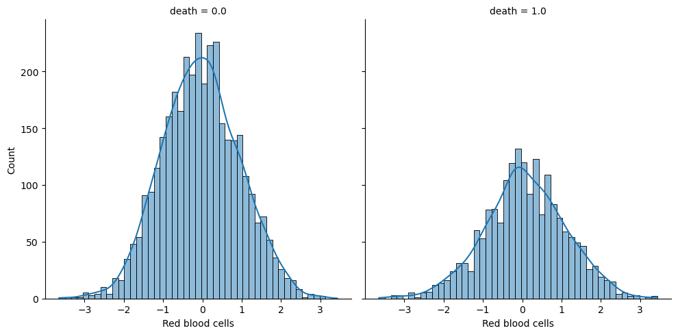
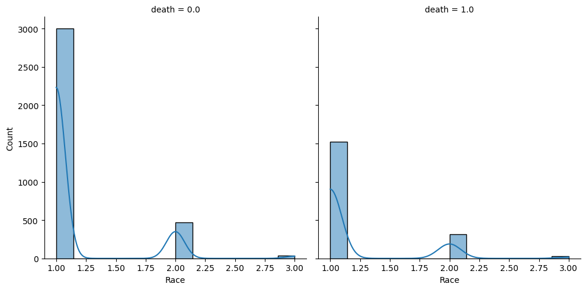

Plotting Conditional Distributions#
# Importing packages we will be using
import seaborn as sns
%store -r transformed_data
for col in transformed_data.drop("death", axis=1).columns:
sns.displot(data=transformed_data, x=col, col="death", kde=True)

